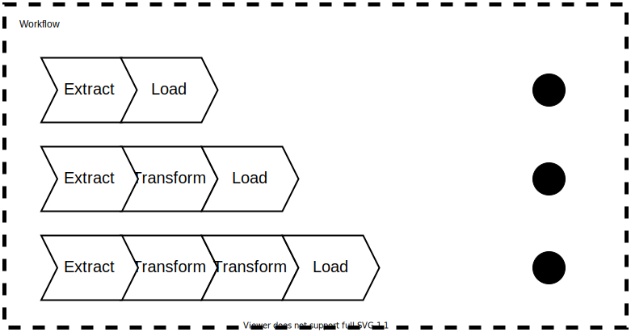

What is it ?
This package allows you to create a micro-service that will be orchestrating more than one data pipeline.
Installation
composer require php-etl/workflow
Basic usage
To define your workflow, you need to specify the jobs you need, that is to say your different pipelines.
Please see the Pipeline documentation to know how a pipeline should be configured.
workflow:
jobs:
- pipeline:
# the first pipeline configuration
# ...
- pipeline:
# the second pipeline configuration
# ...
The name option allows you to name your job.
workflow:
jobs:
- name: 'Pipeline 1'
pipeline:
# the pipeline configuration
# ...
Advanced usage
Using expressions
It’s possible to use expressions in your pipeline using the expression_language option. To use these expressions,
you need to use our customised Providers which provide the different expressions. For more information, please visit
the detailed documentation of the language expressions.
pipeline:
expression_language:
- 'Kiboko\Component\Satellite\ExpressionLanguage\Provider'
Using services
You can use services in your pipeline in the same way as in a traditional Symfony application.
For more details, go to the detailed services documentation.
pipeline:
services:
App\Service\Bar:
arguments:
- 'my-file.csv'